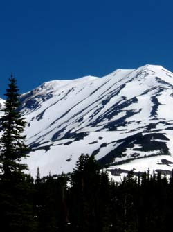
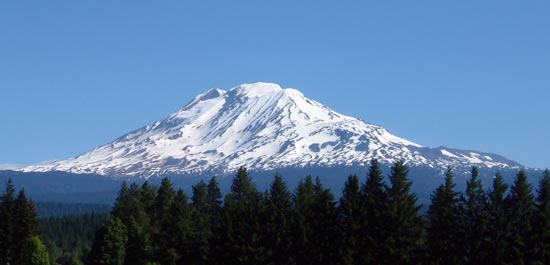
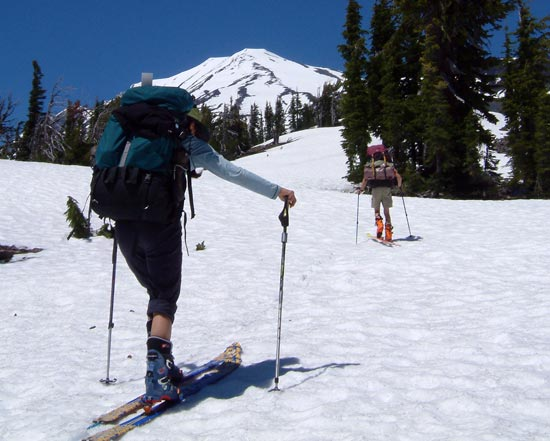
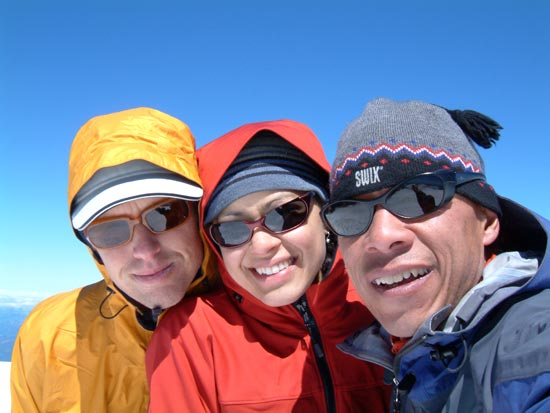
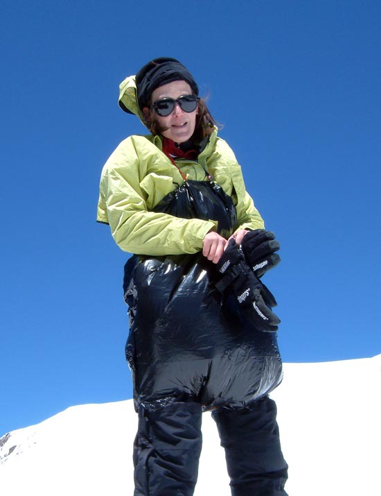
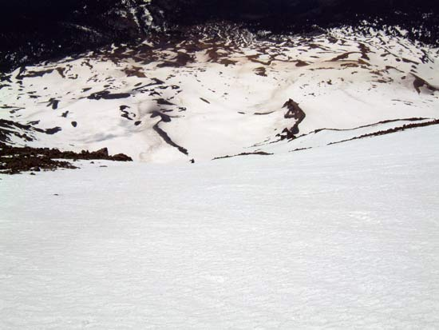
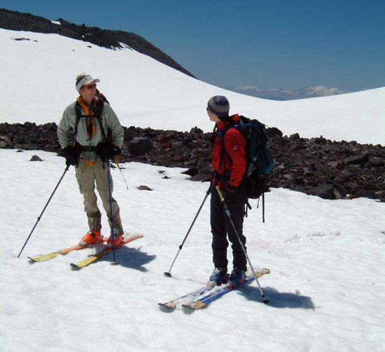

The southwest chutes of Mt. Adams.
3500
vft of pure fall line nirvana.
|
The south west chutes off the false summit of Mt. Adams
hold an even 35-40 degrees for over 3500 ft. Coming from
the Wasatch where there are only a handful of consistent
runs over 2000, this felt like an eternity. From the top,
the flats below looked gray and fuzzy, like some far off
horizon.
It was risky, but I played "scissors" and won
the game of rock-scissors-paper to be the first to ski.
However, I didn't make it far past the first slight rollover.
In my excited state of skiing nirvana I had completely
lost my breath. Powder Princess held it together best on
the massive line and gracefully carved the longest run
in one shot, about 2500 vft. At the bottom she was bubbling
over with self astonishment.We were all bubbling over with
astonishment!
We camped two nights on the ridge next to Crescent glacier at about 7800
ft. This was an excellent spot to stage our climbs as well as to finish
our days. There was a steep south facing bowl just to the west of our
camp that made for convenient afternoon skiing, and a great way to end
the day.
|
| I can get into this volcano thing.
Next year we all agreed to ski the volcanoes of the north west
for at least a week. Unfortunately there's a whole season of
powder skiing to get through first before we can head back
to this gliss paradise. |

Mount Adams seen from the south,
not far from the swarming sail sporting masses of Hood
River. We skied the tasty, long line angling to the left.

Stomping little sun cups on the
way up. We climbed the large snowfield on the south of
the peak.

Foothill, Powder Princess, and the
Evil Dr. Fu Manchu up on top wondering if the corn is ever
going to soften in the high winds. It did.

One of the many custom mountain
fashions sported by locals on Adams. We saw garbage bags,
modified sleeping pads, and even full body rubber suits
being used to facilitate flying down the mountain sitting
on your ass. It looked like so much fun that I questioned
why I was carting around such heavy equipment when I could
have just carried a plastic bag. There's always next year
to take up butt glissading...

This is looking down the southwest
chute from about a third of the way down. That's Powder
Princess mid carve in the center. looking down the run
from the top was probably the the most exciting thing I've
ever seen.

"Well, I skied the longest line...."
"Yeah, But I skied the fastest..."
"Yeah, But I was having the most fun..."
"Yeah, But..."
Etc, etc, etc. |
|
|